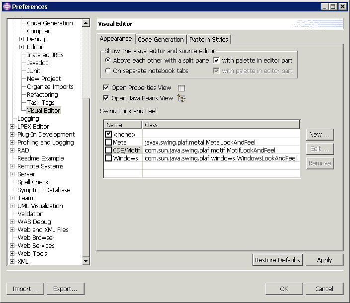

With the Visual Editor for Java, you have various options for choosing
and changing the Look and Feel of your application. To change preferences,
go to Window > Preferences > Java > Visual Editor. Select the Appearance tab
to add, edit, or remove choices for Swing Look and Feel preferences.

Adding a new look and feel
Look & Feels other
than the ones provided by Swing can also be used with the Visual Editor. For
example, the open-source Look and Feels available from javootoo.com. To add a new Look and
feel to your application,
- Download a Look and feel zip file of your choice, and save to a local
directory.
- Unzip to the Project directory where you want to include the new Look
and Feel.
- In the Project Explorer, right-click the project name.
- Click .
- Click Add External Jars to add the .jar file specific to the Look
and Feel, then click OK. Now, you are ready to apply the new Look
and Feel to your application.
- Click Window > Preferences > Java > Visual Editor.
- Select the Appearance tab.
- In the Look and Feel pane, click New. Provide a Name and
the Class for the new Look and Feel. The LookAndFeel class name should
be in the Look & Feel's documentation. If not, you can find the class
name by right-clicking the .jar file you added to your project, then click
F4 to open its heirarchy.
- Click OK.
- Close your application, then open it again to see the new Look and Feel.